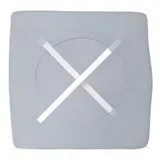

향수 지속력 3배 높이는 법, 흔히 하는 '이 실수'만 줄이세요
사진: RDNE Stock project / Pexels (무료 이미지, 출처 표기)
아침에 정성껏 뿌린 향수가 출근길만 지나면 흔적도 없이 사라져 아쉬웠던 적이 많으실 겁니다. 비싼 향수를 무작정 여러 번 덧뿌리는 것은 향을 독하게 만들 뿐 근본적인 해결책이 아닙니다. 피부 상태와 뿌리는 방식만 살짝 바꾸어도 지속 시간을 배로 늘릴 수 있습니다. 지금 바로 실천할 수 있는 구체적인 가이드를 정리해 드립니다.
1. 향수가 금방 날아가는 뜻밖의 원인
가장 큰 원인은 피부의 '건조함'에 있습니다. 향수의 알코올 성분은 피부에 닿으면 증발하는데, 이때 피부에 유분기가 없으면 향료 분자까지 함께 공기 중으로 날아가 버립니다. 지성 피부보다 건성 피부에서 향수 지속 시간이 훨씬 짧은 이유가 바로 이 때문입니다.
또한 뿌린 직후 습관적으로 양 손목을 세게 비비는 행동도 지속력을 떨어뜨립니다. 마찰열이 발생하면서 향수의 미세한 분자 구조가 깨지고, 특히 첫인상을 결정하는 탑 노트(Top Note, 처음 분사했을 때 느껴지는 향)가 빠르게 왜곡되어 사라집니다.
2. 하루 종일 은은하게, 지속력 높이는 실전 테크닉
- 무향 보습제 활용하기: 향수를 뿌릴 부위에 향이 없는 바디로션이나 바셀린을 먼저 얇게 바르세요. 유분막이 향료를 붙잡아두는 앵커 역할을 하여 지속 시간을 2배 이상 늘려줍니다.
- 맥박이 뛰는 곳에 뿌린 후 톡톡 두드리기: 손목 안쪽, 귀 뒤, 목덜미처럼 체온이 높고 맥박이 뛰는 곳은 향을 은은하게 발산시킵니다. 분사 후에는 비비지 말고 가볍게 눌러 흡수시켜야 합니다.
- 섬유나 머리카락 끝 활용하기: 피부보다 섬유가 향을 오래 머금습니다. 옷 안감이나 머리카락 끝에 가볍게 뿌려두면 움직일 때마다 은은한 향이 오랫동안 지속됩니다. 단, 실크나 밝은 가죽 소재는 오염될 수 있으니 주의해야 합니다.
3. 부향률에 따른 향수 종류와 특징 비교
내가 쓰는 향수의 기본 지속 시간을 파악하는 것도 중요합니다. 향수는 부향률(향수에 함유된 향료 원액의 비율)에 따라 크게 네 가지로 나뉩니다. 향수를 구매하거나 사용할 때 아래 기준을 참고해 보세요.
4. 향수 보관 시 절대 피해야 할 행동 3가지
아무리 올바른 방법으로 뿌려도 향수 자체가 변질되면 고유의 지속력과 향을 잃게 됩니다. 특히 많은 사람들이 욕실 수납장에 향수를 보관하곤 합니다. 하지만 욕실의 극심한 온도 변화와 높은 습도는 향수의 화학 구조를 빠르게 붕괴시키는 주범입니다.
향수는 직사광선이 들지 않고 온도가 일정하게 유지되는 옷장 안이나 화장대 서늘한 곳에 보관하는 것이 정석입니다. 또한 흔들림에 지속적으로 노출되면 공기가 혼입되어 산화가 촉진되므로 가급적 가방에 무작정 넣고 다니기보다 작은 공병에 소분하여 휴대하는 것을 권장합니다.
🔗 이 글도 함께 보면 좋아요: 집에서 만드는 떠먹는 막걸리, 이화주 키트 실패 없이 성공하는 법
관련 추천 상품
이 포스팅은 쿠팡 파트너스 활동의 일환으로, 이에 따른 일정액의 수수료를 제공받습니다.
한눈에 보는 상품 목록

세타필 모이스춰라이징 로션 무향
향수의 본래 향을 왜곡하지 않으면서 풍부한 보습막을 형성해 지속력을 높여주는 대표적인 무향 바디로션입니다.
바셀린 오리지널 프로텍팅 젤리
손목이나 귀 뒤에 아주 얇게 바른 뒤 향수를 분사하면 하루 종일 은은한 잔향을 붙잡아주는 가성비 아이템입니다.